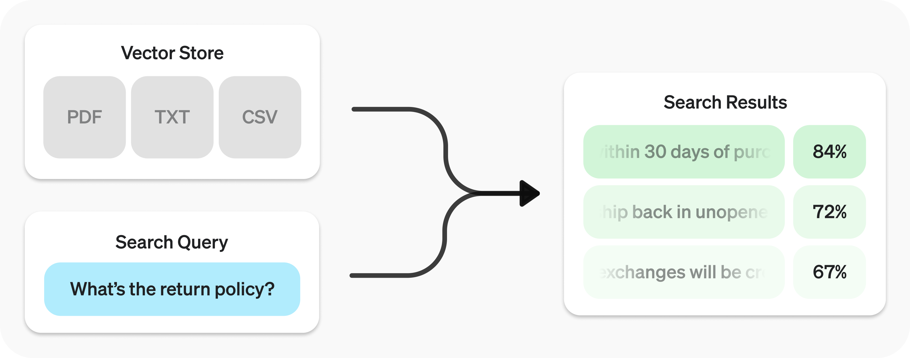

Retrieval#
Search your data using semantic similarity.
The Retrieval API allows you to perform semantic search over your data, which is a technique that surfaces semantically similar results — even when they match few or no keywords. Retrieval is useful on its own, but is especially powerful when combined with our models to synthesize responses.

The Retrieval API is powered by vector stores, which serve as indices for your data. This guide will cover how to perform semantic search, and go into the details of vector stores.
Quickstart#
Create vector store and upload files.
from openai import OpenAI
client = OpenAI()
vector_store = client.vector_stores.create( # Create vector store
name="Support FAQ",
)
client.vector_stores.files.upload_and_poll( # Upload file
vector_store_id=vector_store.id,
file=open("customer_policies.txt", "rb")
)
Send search query to get relevant results.
user_query = "What is the return policy?"
results = client.vector_stores.search(
vector_store_id=vector_store.id,
query=user_query,
)
To learn how to use the results with our models, check out the synthesizing responses section.
Semantic search#
Semantic search is a technique that leverages vector embeddings to surface semantically relevant results. Importantly, this includes results with few or no shared keywords, which classical search techniques might miss.
For example, let’s look at potential results for "When did we go to the moon?":
Text |
Keyword Similarity |
Semantic Similarity |
|---|---|---|
The first lunar landing occured in July of 1969. |
0% |
65% |
The first man on the moon was Neil Armstrong. |
27% |
43% |
When I ate the moon cake, it was delicious. |
40% |
28% |
(Jaccard used for keyword, cosine with text-embedding-3-small used for semantic.)
Notice how the most relevant result contains none of the words in the search query. This flexibility makes semantic search a very powerful technique for querying knowledge bases of any size.
Semantic search is powered by vector stores, which we cover in detail later in the guide. This section will focus on the mechanics of semantic search.
Perfoming semantic search#
You can query a vector store using the search function and specifying a query in natural language. This will return a list of results, each with the relevant chunks, similarity scores, and file of origin.
Search query
results = client.vector_stores.search(
vector_store_id=vector_store.id,
query="How many woodchucks are allowed per passenger?",
)
Results
{
"object": "vector_store.search_results.page",
"search_query": "How many woodchucks are allowed per passenger?",
"data": [
{
"file_id": "file-12345",
"filename": "woodchuck_policy.txt",
"score": 0.85,
"attributes": {
"region": "North America",
"author": "Wildlife Department"
},
"content": [
{
"type": "text",
"text": "According to the latest regulations, each passenger is allowed to carry up to two woodchucks."
},
{
"type": "text",
"text": "Ensure that the woodchucks are properly contained during transport."
}
]
},
{
"file_id": "file-67890",
"filename": "transport_guidelines.txt",
"score": 0.75,
"attributes": {
"region": "North America",
"author": "Transport Authority"
},
"content": [
{
"type": "text",
"text": "Passengers must adhere to the guidelines set forth by the Transport Authority regarding the transport of woodchucks."
}
]
}
],
"has_more": false,
"next_page": null
}
A response will contain 10 results maximum by default, but you can set up to 50 using the max_num_results param.
Query rewriting#
Certain query styles yield better results, so we’ve provided a setting to automatically rewrite your queries for optimal performance. Enable this feature by setting rewrite_query=true when performing a search.
The rewritten query will be available in the result’s search_query field.
Original |
Rewritten |
|---|---|
I’d like to know the height of the main office building. |
primary office building height |
What are the safety regulations for transporting hazardous materials? |
safety regulations for hazardous materials |
How do I file a complaint about a service issue? |
service complaint filing process |
Attribute filtering#
Attribute filtering helps narrow down results by applying criteria, such as restricting searches to a specific date range. You can define and combine criteria in attribute_filter to target files based on their attributes before performing semantic search.
Use comparison filters to compare a specific key in a file’s attributes with a given value, and compound filters to combine multiple filters using and and or.
Comparison filter
{
"type": "eq" | "ne" | "gt" | "gte" | "lt" | "lte", // comparison operators
"property": "attributes_property", // attributes property
"value": "target_value" // value to compare against
}
Compound filter
{
"type": "and" | "or", // logical operators
"filters": [...]
}
Below are some example filters.
Region
Filter for a region
{
"type": "eq",
"property": "region",
"value": "us"
}
Date range
Filter for a date range
{
"type": "and",
"filters": [
{
"type": "gte",
"property": "date",
"value": 1704067200 // unix timestamp for 2024-01-01
},
{
"type": "lte",
"property": "date",
"value": 1710892800 // unix timestamp for 2024-03-20
}
]
}
Filenames
Filter to match any of a set of filenames
{
"type": "or",
"filters": [
{
"type": "eq",
"property": "filename",
"value": "example.txt"
},
{
"type": "eq",
"property": "filename",
"value": "example2.txt"
}
]
}
Complex
Filter for top secret projects with certain names in english
{
"type": "or",
"filters": [
{
"type": "and",
"filters": [
{
"type": "or",
"filters": [
{
"type": "eq",
"property": "project_code",
"value": "X123"
},
{
"type": "eq",
"property": "project_code",
"value": "X999"
}
]
},
{
"type": "eq",
"property": "confidentiality",
"value": "top_secret"
}
]
},
{
"type": "eq",
"property": "language",
"value": "en"
}
]
}
Ranking#
If you find that your file search results are not sufficiently relevant, you can adjust the ranking_options to improve the quality of responses. This includes specifying a ranker, such as auto or default-2024-08-21, and setting a score_threshold between 0.0 and 1.0. A higher score_threshold will limit the results to more relevant chunks, though it may exclude some potentially useful ones.
Vector stores#
Vector stores are the containers that power semantic search for the Retrieval API and the Assistants API file search tool. When you add a file to a vector store it will be automatically chunked, embedded, and indexed.
Vector stores contain vector_store_file objects, which are backed by a file object.
Object type |
Description |
|---|---|
file |
Represents content uploaded through the Files API. Often used with vector stores, but also for fine-tuning and other use cases. |
vector_store |
Container for searchable files. |
vector_store.file |
Wrapper type specifically representing a file that has been chunked and embedded, and has been associated with a vector_store.Contains attributes map used for filtering. |
Pricing#
You will be charged based on the total storage used across all your vector stores, determined by the size of parsed chunks and their corresponding embeddings.
Storage |
Cost |
|---|---|
Up to 1 GB (across all stores) |
Free |
Beyond 1 GB |
$0.10/GB/day |
See expiration policies for options to minimize costs.
Vector store operations#
Create vector store
client.vector_stores.create(
name="Support FAQ",
file_ids=["file_123"]
)
Retrieve vector store
client.vector_stores.retrieve(
vector_store_id="vs_123"
)
Update vector store
client.vector_stores.update(
vector_store_id="vs_123",
name="Support FAQ Updated"
)
Delete vector store
client.vector_stores.delete(
vector_store_id="vs_123"
)
List vector stores
client.vector_stores.list()
Vector store file operations#
Some operations, like create for vector_store.file, are asynchronous and may take time to complete — use our helper functions, like create_and_poll to block until it is. Otherwise, you may check the status.
Create vector store file
client.vector_stores.files.create_and_poll(
vector_store_id="vs_123",
file_id="file_123"
)
Upload vector store file
client.vector_stores.files.upload_and_poll(
vector_store_id="vs_123",
file=open("customer_policies.txt", "rb")
)
Retrieve vector store file
client.vector_stores.files.retrieve(
vector_store_id="vs_123",
file_id="file_123"
)
Update vector store file
client.vector_stores.files.update(
vector_store_id="vs_123",
file_id="file_123",
attributes={"key": "value"}
)
Delete vector store file
client.vector_stores.files.delete(
vector_store_id="vs_123",
file_id="file_123"
)
List vector store files
client.vector_stores.files.list(
vector_store_id="vs_123"
)
Batch operations#
Batch create operation
client.vector_stores.file_batches.create_and_poll(
vector_store_id="vs_123",
file_ids=["file_123", "file_456"]
)
Batch retrieve operation
client.vector_stores.file_batches.retrieve(
vector_store_id="vs_123",
batch_id="vsfb_123"
)
Batch cancel operation
client.vector_stores.file_batches.cancel(
vector_store_id="vs_123",
batch_id="vsfb_123"
)
Batch list operation
client.vector_stores.file_batches.list(
vector_store_id="vs_123"
)
Attributes#
Each vector_store.file can have associated attributes, a dictionary of values that can be referenced when performing semantic search with attribute filtering. The dictionary can have at most 16 keys, with a limit of 256 characters each.
Create vector store file with attributes
client.vector_stores.files.create(
vector_store_id="<vector_store_id>",
file_id="file_123",
attributes={
"region": "US",
"category": "Marketing",
"date": 1672531200 # Jan 1, 2023
}
)
Expiration policies#
You can set an expiration policy on vector_store objects with expires_after. Once a vector store expires, all associated vector_store.file objects will be deleted and you’ll no longer be charged for them.
Set expiration policy for vector store
client.vector_stores.update(
vector_store_id="vs_123",
expires_after={
"anchor": "last_active_at",
"days": 7
}
)
Limits#
The maximum file size is 512 MB. Each file should contain no more than 5,000,000 tokens per file (computed automatically when you attach a file).
Chunking#
By default, max_chunk_size_tokens is set to 800 and chunk_overlap_tokens is set to 400, meaning every file is indexed by being split up into 800-token chunks, with 400-token overlap between consecutive chunks.
You can adjust this by setting chunking_strategy when adding files to the vector store. There are certain limitations to chunking_strategy:
max_chunk_size_tokensmust be between 100 and 4096 inclusive.chunk_overlap_tokensmust be non-negative and should not exceedmax_chunk_size_tokens / 2.
Supported file types
For text/ MIME types, the encoding must be one of utf-8, utf-16, or ascii.
File format |
MIME type |
|---|---|
.c |
text/x-c |
.cpp |
text/x-c++ |
.cs |
text/x-csharp |
.css |
text/css |
.doc |
application/msword |
.docx |
application/vnd.openxmlformats-officedocument.wordprocessingml.document |
.go |
text/x-golang |
.html |
text/html |
.java |
text/x-java |
.js |
text/javascript |
.json |
application/json |
.md |
text/markdown |
application/pdf |
|
.php |
text/x-php |
.pptx |
application/vnd.openxmlformats-officedocument.presentationml.presentation |
.py |
text/x-python |
.py |
text/x-script.python |
.rb |
text/x-ruby |
.sh |
application/x-sh |
.tex |
text/x-tex |
.ts |
application/typescript |
.txt |
text/plain |
Synthesizing responses#
After performing a query you may want to synthesize a response based on the results. You can leverage our models to do so, by supplying the results and original query, to get back a grounded response.
Perform search query to get results
from openai import OpenAI
client = OpenAI()
user_query = "What is the return policy?"
results = client.vector_stores.search(
vector_store_id=vector_store.id,
query=user_query,
)
Synthesize a response based on results
formatted_results = format_results(results.data)
'\n'.join('\n'.join(c.text) for c in result.content for result in results.data)
completion = client.chat.completions.create(
model="gpt-4.1",
messages=[
{
"role": "developer",
"content": "Produce a concise answer to the query based on the provided sources."
},
{
"role": "user",
"content": f"Sources: {formatted_results}\n\nQuery: '{user_query}'"
}
],
)
print(completion.choices[0].message.content)
Output:
"Our return policy allows returns within 30 days of purchase."
This uses a sample format_results function, which could be implemented like so:
Sample result formatting function
def format_results(results):
formatted_results = ''
for result in results.data:
formatted_result = f"<result file_id='{result.file_id}' file_name='{result.file_name}'>"
for part in result.content:
formatted_result += f"<content>{part.text}</content>"
formatted_results += formatted_result + "</result>"
return f"<sources>{formatted_results}</sources>"